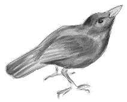

À Portinfé
Saint Ou.
Moussieu l'Editeu,
"Oh, mais, man pouôre Ph'lip", s'fit la Merrienne hier au sé quand, après un bouon tais j'tiomes assis yun à chaque bord du feu. "Si j n'avions pas yeu l'avis de nos prépather avec tout plien d'bouais et d'tchèrbon, j'n'éthions jamais pâssé à travers. Tu'as veu dans la gâzette combien de vielles gens ont pâssé d'l'autre côté chais jours. Té et mé, j'sommes bein chanceux d'être ocquo en vie, mais je n'sais pas pour combein longtemps si la fraid continue. Je n'me r'souveins pas d'un patheil hivé dans l'couothant d'ma vie".
"Si-fait, Merrienne," j'li dis, "j'avons veu pièthe. As-tu r'oublié l'hivé d'la grande fraid, quand, pour siez s'maines d'temps, tout 'tait g'lé si du qu'à la Mathe au Seigneur y'avait d'la glace un pid d'êpais,et nou n'pouvait faithe rein sûs la têrre?".
"Ch'est vrai, à ch'teu qu'tu m'rappèle chais têrriblyes siez s'maines là," ou dit. "Dans une seule niet une bouonne maintchi d'la s'menche fut g'lée, car personne ne s'attendait à ditet temps. Et pourtant la saison, quand ou vint si tard, n'fut pas tant pièthe et les fermiers ne s'pliaignaient pas, car en Angliétêrre lé temps avait 'té ocquo pûs fraid, et i' n'y avait pas pour dithe de compétition. Mais, Ph'lip, j'me r'souveins à ch'teu que ch'tait dans yunne de chais séthées que j'te rencontris pour la preumié fais. Les femmes et filles du vaisiné, n'ayant rein à faithe siez-yeux allaient à la Mathe au Seigneur avec un "stove" et faisaient du tais et du café pour lûs hommes."
"Vèthe, ma chièthe", j'li dis, "et ch'tait dans yunne de chais séthées que j'vinmes à nos entreconnaitre. Tchinze jours pûs tard tu m'dis "oui" quand j'te d'mandis si tu voulais mé mathier. J'n'avions pas d'sous, mais lé couothage n'mantchait pas. J'prins une ferme et si, par bordée, je n'savions pas si l'Dénonciateur n'entréthait pas dans notre bel pour faithe un arrêt, tchiquechose s'arrivait tréjours pour nos sauver."
"Ch'tait les pouôres ouaisieaux tchi souffraient l'pûs" ou dit, car i' n'avaient rein à mangi".

"Tu'as raison," j'li dis, "car i' nos vint des millions de grives, de piacards et d'autres de France et mé-même j'ai ramâssé un mesle le long du fôssé tchi tait si faiblye tchi n'pouvait pas voler. Et pourtant, de touos l's ouaisieaux, les mesles sont les pûs timides. Nou n'gâgnait rein d'aller à la chasse, parsque tout ch'que nou tithait n'était qu'la pé et l's os. Hardi des fermiers installitent des "stoves" dans lûs sohièrs pour préserver lûs s'menche la préchaine année mais i' n'eutent jamais la djobbe de l's allumer car nou ne r'vit jamais un patheil hivé, et i' furent laissis à rouï. Sans doute si nou cherchait nou pouôrrait ocquo en trouver yun ichin et là".
La Merrienne, mettant un gros choutchet et un mio d'tchèrbon sûs l'feu, sé mint à pâsler de chein tchi s'pâssait ichin en Jêrri. "Si chein qu'la "Post" dit est correcte" ou dit, "et je n'voudrais pas douter qu'oulle a raison y'étha une énorme somme pour lé Chancellyi à trouver pour l'année tchi veint, et ch'est seux que y'étha d'nouvelles taxes. As-tu autchune idée, Ph'lip tchèsqu'i' s'en va les péyi?"
"Lé tourisme, sans doute", j'li dis, "étha à contribuer sa part, mais pour lé restant, je n'sais rein de certain. Nou pâsle d'un taxe sûs les vièrs garcons."
"Il est bétôt temps," ou dit, "mais i' faudra autrechose. La litcheu, par exemplye, et le p'tun."
"Oh, sans doute," j'li dis "car tu n'bé qu'du tais et tu n'fume pas, mais si j'en avais l'pouvé, je doubliéthais la taxe sûs les articlyes que nou vait dans l's f'n'êtres des grandes boutiques".
"Tchi sorte d'choses?" ou d'mandit.
"Des cauches en souaie à qu'menchi", j'li dis, "épis les bieaux p'tits souliers pour les femmes tchi dév'thaient saver mûs, et les filles, tchi n'ont pas ocquo assez d'avis. Des articles avec d'la dentelle et du parfum dans des p'tites boutelles pour sé faithe attrayantes ès hommes. Autchune chose pour attraper un homme, et dans plusieurs cas l'faithe minséthablye pour lé restant d'sa vie. Le divorce dév'thait étre aboli sinon pour des couplyes tch'ont té mathies au mains djais ans. Un homme tchi fiche san camp avec la femme d'un autre dév'thait étre mint à câsser d'la piérre comme nou faisait aut'fais, et une femme tchi d'serte s'n homme pour un autre et bein je n'sais pas trop chein qu'nou dév'thait li faithe".
"J'séthais bein, mé!" ou dit, et tu peux t'fier qu'ou paiethait pour. Mais tout chonna ne trouv'thait pas les sous tchi nos faut. Tchèsqu'en est des fermiers?"
"Chonna n'est pas hardi gênant," j'li dis, "car dans tchiques années i' n'en restétha pas fort. Ch'est minsèthe après minsèthe pour les pouôres balloques Hardi tch'avaient fait une pouôre saison, sé fiaient sûs les brécolis pour les r'mettre sûs lûs pids, mais y'a des vrégies comme des vrégies tchi n'valent pas un sou sinon pour rafraichi la térre. Quant ès flieurs, le prospect n'est pas brilliant. A prendre yun dans l'autre lé seul fermyi tchi peut faithe noué les deux buts au jour d'agniet n'a qu'une resource".
"Et tchèsque ch'est?" ou d'mandit.
"Ch'est l'fermyi tchi garde un fliantchet d'bêtes, et a une femme ou une famillye à li aidgi. Lé lait peut ocquo péyi pour bein qu'la main-d'oeuvre d'meuthe sûs la ferme et est d'partie d'la famillye. D'mande à des gens comme le Henri L'Maistre, d'Saint Martin et l'Sieur Richardson, à la Crouaix ès Mottes, à Saint Sauveux, si ch'n'est pas vrai, et pense à nou, té et mé ocquo dans notre ferme parsque j'avons yeu l'avis d'aver un fliantchet d'mousses et n'oublie jamais que la têrre est tréjours là".
"Ch'est vrai", ou dit, "mais Ph'lip, nos v'la tout près du Jour dé l'An et nou dév'thaient vivre en espéthance".
"J'l'avons tréjous fait," j'li dis "et j'allons continuer à l'faithe, car quand i' n'y a pas d'espéthance, i' n'y a rein. Et donc, ma chièthe femme, i' faut craithe que tout itha mûs en soësante-deux que nou pouôrrait craithe au moment. Jêrri a veu d'bouons temps et il a veu d'mauvais temps, mais Jêrri est ocquo là. Pour en fini à ces sé, j'crai tchi faudrait un bouon vêrre-caud pour béthe à la santé de touos nos amins. Ch'est là la vraie manièthe de fini une année et d'en qu'menchi une autre. Mais je n'm'en vais pas bèthe tout-seu. Deux bouons vêrres-cauds. Merrienne, avec du chucre et une tranche dé limon. Tu n't'en vas pas dithe nennin!"
"Oh bien," ou s'fit, ouvrant l'armouaithe, "pour une fais chonna n'peut pas faithe grand ma. Santé, man Ph'lip".
Et, Moussieu, après un couplye d'vêrres ch'fut ma djobe d'aidgi à la Merrienne à ramonter et à sé deshabillyi.
Ph'lip
La Gâzette du Sé 30/12/1961
Viyiz étout: